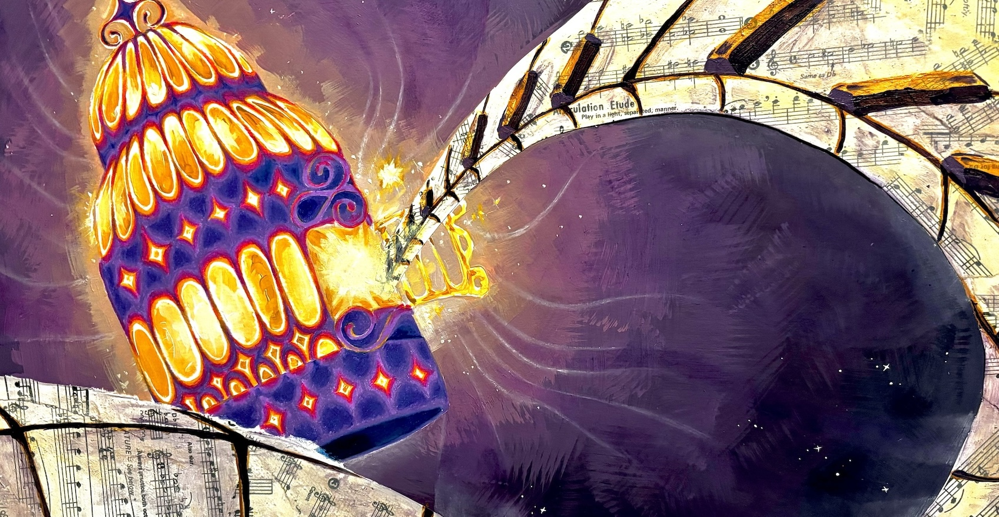

Sketch
Using pencil, I plot out the major elements that will make up the artwork. Sections are given less or more detail, depending on whether they will be covered or used as a guide.
Major Colors
The largest rudamentary shapes of color are filled, giving me an idea of the piece as I work. The original plan may be altered slightly in this phase as better solutions and ideas arise.
Finish
Smaller areas are filled, and detailing is added with critique from family and peers to aid. Details can consist of general rednering, shading, contour, and any colored pencil or pen work.

Closeup
A closer look at the focal point, where most of the detail has been oriented in order to attract focus. The materials used for this project were as such:
- Acryllics for the backdrop, lights, and keys
- Oil pastels for the waves of variation
- Colored pencil for the cage object itself
- Pasted sheet music for the twisting keyboard
- Finally white pen for the stars and highlights